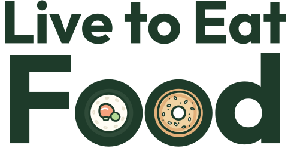
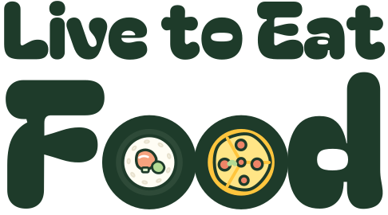

Tina’s picks
From Tina’s notes on Oct 19. These are live across the site, the brand book and the design system. The one open option is the wordmark lettering.
LTEF · Options · Tina’s picks, Oct 19
The wordmark


LTEF · Options · Wordmark
The display font
Where should we eat?
Volturno · Budget-friendly bites · $5 off
Headings, place names and deal amounts. Body text stays in Figtree, labels in Bricolage Grotesque and Tina’s notes in Shantell Sans.
LTEF · Options · Display type
The stamp and the ticket

LTEF · Options · Stamp and ticket